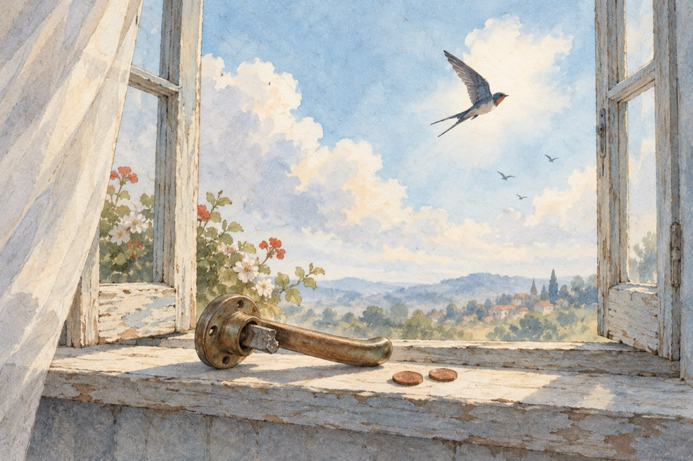

De doi bani speranță
Nevinovat în instanță
Cătușe lanț la picioare
Mai ai de doi bani speranță
Ea e ultima ce moare.
Toată lumea te urăște
Ești tratat cu ignoranță
Crezul tău te întărește
Mai ai de doi bani speranță.
Te-au băgat de-acum la zdup
Mai există-o alternanță
Să te ferești de năduf,
Mai ai de doi bani speranță!
Cazi din pat, din avion
N-are nicio importanță.
Ai visat în al tău somn,
Și în vis ai o speranță!
Ți s-a rupt la ușă clanța
Poți să sari pe la fereastră
De doi bani speranță
Poți sta liniștit în casă!
Am făcut aceste versuri
Ca pe-un sfat, ca pe-o povață,
Totdeauna mai există, cu demersuri,
De doi bani speranță.
Vasile Groza